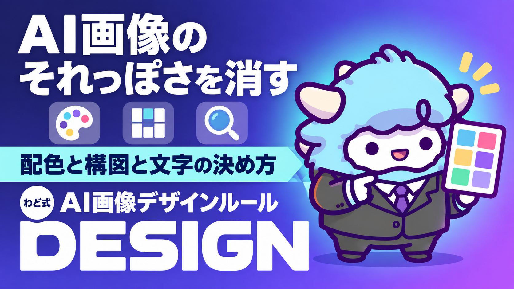

AI画像の『それっぽい』を消すデザインルール
生成画像がチープに見える原因と、プロンプトの直し方
このページが特典の本体です。下へスクロールして使ってくださいAI画像の『それっぽい』を消すデザインルール
AIに画像を作らせると、内容は合っているのに「なんとなくAIが作った感じがする」ことがあります。この特典は、その「それっぽさ」がどこから来るのか、なぜ起きるのか、どう直すのかを、配色・構図・文字・指示の出し方の4つに整理し、そのまま使えるプロンプトの形にしたものです。
はじめに
わどです。noteやBrainのアイキャッチ、Instagramのストーリーズ、Xに貼る投稿画像。AIで作った画像を並べてみると、誰が作ったのかバラバラなはずなのに、なぜか同じような雰囲気に寄っていくことがあります。紫がかった発光感のある背景。同じ形のカードが3つ並ぶレイアウト。やたらキレイに整った数字。これは偶然ではありません。AIが「それらしい」と判断して選びやすいパターンが、決まっているからです。
パターンが決まっているということは、直し方も決められるということです。この特典は、海外で体系化された「AIっぽさを避けるためのチェック項目集」を土台に、わどの言葉でnote・Brain・Instagram・Xの画像づくりに使える形に書き直しました。デザインの専門知識がなくても、チェックリストを見ながら直せる構成にしています。
この特典の進め方
最初から順番に読む必要はありません。「1. なぜ失敗するのか」で全体の構造をつかんだら、「2. 型ごとの失敗と直し方」で自分がよく使う画像の種類(アイキャッチ・ストーリーズ・投稿画像)に当てはまる項目を探し、あとは手元の画像を直しながら必要な章に戻ってくる読み方が一番早く効果が出ます。今、直したい画像か、これから作りたい画像のイメージを1つ持ってから読み進めてください。
最初のゴール(今日やる1つ)
今日のゴールは1つだけです。
直近で使ったAI生成画像(または、これから作る画像)を1つ選び、下の型のうち3つ以上をチェックして直す。
3つ見つかれば、画像の印象は目に見えて変わります。全部を一度に直そうとしなくて大丈夫です。
1. なぜ失敗するのか(構造)
AIが作る画像が「それっぽく」なる理由は、だいたい4つに分けられます。
- 多数派に寄る。 AIは学習した大量の画像の「平均的に正解っぽいもの」を出そうとします。紫や青みがかった光の演出、同じ形のカードが横並びになる構図は、統計的に「それらしい」と判断されやすいパターンです。
- 要素を揃えすぎる。 見出し・飾り文字・カード・ボタンを、全部同じ大きさ・同じ間隔・同じ色数で整えたがります。人間が手作りしたものは、あえて崩れている部分がありますが、AIは崩しません。
- 数字を盛る。 「99.9%」「50%改善」のような、キレイすぎる数字を出したがります。現実のデータは、もっと中途半端な数字になるものです。
- 文字を詰め込みすぎる。 伝えたいことを全部1枚に入れようとして、情報密度が上がりすぎます。余白が減ると、それだけで「量産型」に見えます。
直し方の共通原則は1つです。「AIが選びやすい定番」を、意図して外す。 何も考えずに生成すると、AIは一番選ばれやすいパターンに寄っていきます。あなたが一言指示を足すだけで、そこから外れます。
2. 型ごとの失敗と直し方(全型・省略しない)
4つのカテゴリに分けます。自分がよく使う画像の種類に当てはまるものを探してください。
カテゴリA 配色(見た瞬間に「AI感」が出る色の使い方)
| # | パターン | 何が起きるか | 直し方 |
|---|---|---|---|
| 1 | 紫・青みがかった発光感 | 背景がぼんやり光るような、紫〜青の淡いグラデーションになる | アクセントカラーを1色だけ選び、彩度を落とす。ベースは白・黒・グレーなどニュートラルな色にする |
| 2 | 色を途中で切り替える | 1枚の画像・1つの投稿シリーズの中で色味がブレる | 一度選んだ色は、その画像・その投稿の最後まで使い切る |
| 3 | 高級感=ベージュ×ゴールド | 「上品に見せたい」指示を出すと、生成り色×金の縁取りに寄りやすい | 別のパレット候補を自分で指定する。シルバー系、深緑×生成り×琥珀、黒×タン、コバルト×クリーム、テラコッタ×グレーなど |
| 4 | 彩度が高すぎる | 全体が原色に近く、目がチカチカする | アクセントカラーの彩度を8割以下に抑えるよう指示する |
カテゴリB 構図・レイアウト
| # | パターン | 何が起きるか | 直し方 |
|---|---|---|---|
| 5 | 同じ形のカードが3つ並ぶ | 「特徴を3つ紹介」のような構成で、機械的な3等分になりやすい | 本当に3つなら3つでよいが、4つあるなら4つのまま作る。空の枠を無理に埋めない |
| 6 | 左右交互のレイアウトの繰り返し | 「文字→画像→文字→画像」が3回以上続くと単調になる | 交互構成は2回までにし、3回目は違う組み方にする |
| 7 | 小さな大文字ラベルの多用 | 見出しの上に飾り文字を毎回つけたがる | 全部につけず、数個に1つ程度に抑える |
| 8 | 文字は左・画像は右の固定構図 | AIが一番選びやすい配置で、初期状態がこれに寄る | 中央配置、右下配置、あえて余白を大きく取るなど、意図的にずらす |
カテゴリC 文字・コピー
| # | パターン | 何が起きるか | 直し方 |
|---|---|---|---|
| 9 | 大げさな形容詞 | 「革新的」「劇的に」「圧倒的に」のような誇張表現が画像内の文字に出る | 具体的な事実・数字に置き換える。無ければ形容詞ごと削る |
| 10 | キレイすぎる数字 | 「99.9%」「50%」のように、丸すぎる数字が出る | 実際の数字をそのまま使う。中途半端な数字の方が信頼できる印象になる |
| 11 | 存在しない実績・人物 | サンプルのつもりで入れたダミーの数字や人名が、本物らしく見えてしまう | ダミーだと分かる書き方にするか、実在する事実だけを使う |
| 12 | 情報の詰め込みすぎ | 1枚に伝えたいことを全部入れて、余白がなくなる | 1枚1メッセージを基本にする。近づいて見たときに気づく余白を残す |
カテゴリD 画像生成そのものの指示の出し方
| # | パターン | 何が起きるか | 直し方 |
|---|---|---|---|
| 13 | 1回の指示で全部まとめて作る | 複数の投稿・複数のセクションを一度に頼むと、同じパターンが繰り返される | 1つの投稿・1つのセクションごとに、1回の指示で1枚を作る |
| 14 | 世界観がバラバラ | シリーズ画像なのに、毎回違うテイストになる | 作り始める前に「この画像全体を貫くテーマ」を1つだけ決める。道具として見せる/旅の記録として見せる/精密機械として見せる/生き物のように見せる/舞台として見せる/記録として見せる、のどれかを選ぶ |
| 15 | 背景の作り方が毎回同じ | シリーズを並べると、全部同じ背景処理に見える | 単色/写真背景/2色の組み合わせ/ノイズ入りグラデーション/色面のブロックなど、投稿ごとに変える |
3. 自己診断チェックリスト
画像を作り終えたら、公開前に次を確認してください。
- [ ] 紫〜青の淡い発光感で、なんとなく画像全体がぼんやりしていないか
- [ ] アクセントカラーが1色に絞られ、途中で色味がブレていないか
- [ ] 「高級感」を狙って、生成り×金の縁取りに寄っていないか
- [ ] 同じ形のカードが機械的に3つ並んでいないか
- [ ] 「文字は左、画像は右」の配置ばかりになっていないか
- [ ] 誇張した形容詞(革新的・劇的に等)が画像内の文字に残っていないか
- [ ] 「99.9%」のような、キレイすぎる数字を使っていないか
- [ ] 1枚に情報を詰め込みすぎて、余白がなくなっていないか
- [ ] シリーズで並べたとき、世界観が統一されているか
- [ ] 近づいて見たときに、何か1つ気づく細部が残っているか
4. 直した後の確かめ方
直し終わった画像は、次の3つで確かめます。
- 画像だけを並べて眺める。 文字を隠して画像だけを見たとき、他の投稿と見分けがつくかを確認します。見分けがつかなければ、まだ「それっぽい」定番のままです。
- 一晩置いてもう一度見る。 作った直後は自分の作品に満足しがちです。時間を空けると、まだ揃いすぎている部分に気づけます。
- 別のAIに見せて聞く。 画像を読み取れるAI(直したのとは別のAI)に「この画像がAI生成だと感じる理由」を聞き、指摘がゼロになるまで繰り返します。3回やって指摘が減らなくなったら、画像の作り方の問題ではなく、そもそも何を見せたいか(構成)の問題です。
この工程を飛ばすと、パターンを避けただけで「らしさ」が入らない、無個性な画像になります。避けることと、自分らしさを入れることは別の作業だと覚えておいてください。
5. 最新AI(2026年9月時点)で増えた失敗(取得日 2026年9月6日)
2026年9月に入り、画面を直接操作しながら文書・表計算・プレゼン資料・Webサイトまで作れる新しいモデルが登場しました(取得日 2026年9月6日時点の情報)。要件が途中で変わっても対応しながら、最初の依頼から完成物まで一気に進められるのが特徴です。デザインツールの操作そのものを任せられる場面が増える、という変化です。
ここで増える失敗は2つあります。
- 量産のスピードが上がった分、同じパターンの繰り返しに気づきにくくなる。 1回の指示で何枚も、何セクションも一気に作れるようになると、上のカテゴリA〜Dのパターンが、シリーズ全体に同じ形で広がってしまいます。速く作れることと、見分けがつく画像であることは別です。
- 人の目を通さずに、そのまま公開まで進んでしまうリスクが上がった。 画面操作までできるモデルは、下書きを作って終わりではなく、そのまま投稿・公開画面まで進める設計です。加えて、画面に映っている情報をそのまま指示として読み取ってしまう可能性も指摘されています。だからこそ、この特典のチェックリストを、公開の直前に必ず1回挟む工程として残してください。
新しいモデルが出ても、型そのものは変わりません。生成のスピードが上がるほど、確かめる工程を省略しない習慣の方が重要になります。
最初に投げるプロンプト
画像を作るとき、まずこれを土台にして指示を出してください。
[作りたい画像の内容]の画像を作ってください。
以下の条件を必ず守ってください。
1. アクセントカラーは1色だけ選び、彩度を抑えめにする。ベースは白・黒・グレーなどニュートラルな色にする。
2. 紫〜青の淡い発光感を背景に使わない。
3. 「高級感」を出したい場合も、生成り色×金の縁取りに寄せない。別の配色(シルバー系、深緑×生成り×琥珀、黒×タン、コバルト×クリームなど)から選ぶ。
4. 同じ形の要素を機械的に3つ並べない。要素の数と内容の数を一致させる。
5. 「文字は左、画像は右」の配置を固定しない。中央配置や、あえて余白を大きく取る配置も検討する。
6. 画像内の文字に、誇張した形容詞(革新的・劇的に等)や、キレイすぎる数字(99.9%等)を入れない。
7. 1枚に情報を詰め込みすぎない。伝えたいことは1つに絞る。
8. この画像全体を貫くテーマを1つ決めてから作る([道具として見せる/旅の記録として見せる/精密機械として見せる/生き物のように見せる/舞台として見せる/記録として見せる]のいずれか)。
作った後、上の8条件のどれかに違反していないか、自分で確認したうえで出力してください。
よくある失敗 7つと直し方
一番よく出る7つだけ、先に覚えておいてください。
- 紫〜青の発光感 → アクセントカラーを1色に絞り、彩度を落とす
- 同じ形のカードが3つ並ぶ → 要素の数と内容の数を一致させる
- 文字は左、画像は右の固定構図 → 中央配置や余白を大きく取る配置に変える
- 誇張した形容詞が画像内の文字に残る → 具体的な事実・数字に置き換える
- キレイすぎる数字 → 実際の数字をそのまま使う
- 情報の詰め込みすぎ → 1枚1メッセージに絞る
- シリーズで世界観がバラバラ → 作る前にテーマを1つ決めてから始める
安全に使うための注意
- この直しはあくまで見た目の調整であり、事実を変える作業ではありません。画像内の数字・実績・引用は、実際にあるものだけを使ってください。
- 存在しない人物・企業のロゴや、実在するように見える資格・受賞マークを、本物らしく見せて使わないでください。
- AIで生成した画像であることを明示する必要がある場面(広告・公的な発表等)では、その表示ルールに従ってください。
- 「このチェックリストを守れば必ずバズる」とは言わないでください。目的はあくまで「それっぽさ」を減らし、見分けがつく画像にすることです。
つまずいたときに聞くプロンプト
直したのにまだ「AIっぽい」と感じるときは、画像を読み取れるAIにこれを投げてください。
この画像を見て、AIが生成したと感じる箇所を全て指摘してください。
指摘の際は、以下を1箇所ずつセットで書いてください。
- 該当する要素(色・構図・文字のどれか)
- なぜAIっぽく感じるか(理由)
- どう直せば「それっぽさ」が減るか(具体案)
指摘がゼロになるまで、私が直した後にもう一度見せるので、同じ基準でチェックしてください。
用語集
- それっぽい画像(AI感): AIが統計的に「正解らしい」と判断しやすい配色・構図・文字の型に寄って、量産品のように見える画像の特徴。
- アクセントカラー: 画像の中で目立たせたい色。基本は1色に絞る。
- ニュートラルベース: 白・黒・グレーなど、主張の少ない土台の色。
- 世界観(テーマ): 画像シリーズ全体を貫く1つの見せ方の方向性。
- fake-perfect numbers: 「99.9%」のような、不自然にキレイすぎる数字。
- 情報密度: 1枚の画像にどれだけ文字・要素を詰め込んでいるかの度合い。
次の一手
この特典は「稼ぐ順番」でいうとSTEP2(コンテンツ商品をつくる)に当たります。文章と同じように、画像も「それっぽさ」を消す工程を経て、初めて読者に届く形になります。面談では、あなた専用の1枚(特注のロードマップ)を一緒に作ります。
出す前の品質チェック(10項目)
公開直前に、この10項目だけ通してください。
- カテゴリA〜Dのうち、見つけたものは全て直したか
- アクセントカラーが1色に絞られているか
- 同じ形の要素を機械的に並べていないか
- 「文字は左、画像は右」の配置ばかりになっていないか
- 画像内の文字に誇張表現やキレイすぎる数字が残っていないか
- 1枚に情報を詰め込みすぎていないか
- シリーズで並べたとき、世界観が統一されているか
- 存在しない実績・人物・ロゴを本物らしく見せていないか
- 別のAIに見せて、指摘がゼロか、大きく減っているか
- 見返したとき、他の画像と見分けがつくか
最終チェックリスト
- [ ] 直したい画像(またはこれから作る画像)を1つ用意した
- [ ] カテゴリA〜Dのうち3つ以上を見つけて直した
- [ ] 「最初に投げるプロンプト」を実際に1回使った
- [ ] 直した画像を一晩置いてもう一度見直した
- [ ] 「出す前の品質チェック(10項目)」を通した
- [ ] 存在しない実績・数字・人物を新しく作っていないことを確認した